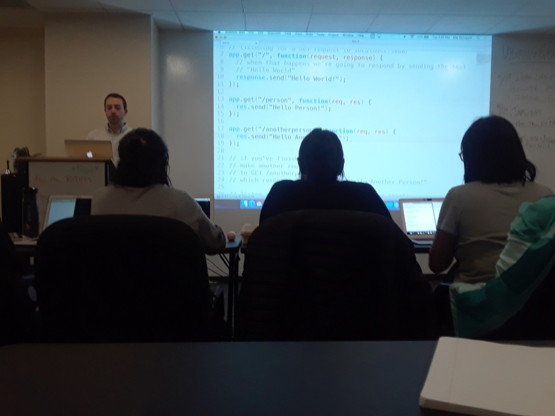

Meetup Report
An Intro to Node.js & Express
hosted byRithm School
Posted by Alexander Yambao on May 5th, 2018
I have spent alot of time studying front end web development and I thought for my meetup I'd check out NodeJS which is used in the backend. The meetup I found was being put on my Rithm School here in San Francisco called Know Node - Introduction to NodeJS & Express.
What are the objectives of this meetup group?
Rithm School is one of the many different coding schools offered in San Francisco to become a developer. They have a 4 month program that goes through front end development with html, css and javascript. They also go through some full stack development with python, SQL and Flask and single page applications with React and NodeJS. They work with you to prep for interviews to hopefully get a developer position afterwards.
Frequency they meet:
They meetup anywhere from every week, to every few weeks talking about a range of subjects; from learning React, Javascript, Python, Github and NodeJS.

What Did We Learn?
In the past, javascript was primarily interpretted through browsers and still is, yet in addition it can now run on the computer aside from the web browser. NodeJS allows for javascript to be run on a server and return the content to the client.
- We ran a javascript file to listen for http requests on the localhost and made the request from the browser
- Learned a little about Express.js a javascript framework that makes it easier to make different routes.
- Made Urls dynamic with params - Params are a way to pass different information from the browser search bar into the nodejs javascript file variable
- when we type in localhost:3000/add/bobbyJoeBrown into the search bar the server will pass bobbyJoeBrown into the name variable that can be used in the js file later.
- ctrl or command + L, in a web browser quickly takes you to the address bar
Thoughts on the Meetup
I thought it was good meetup, the lecturer was engaging, he would lecture for a little bit and then we would try out the presentation material on our own. He had some good insights. The meetup wasn't too long and we were able to meet others who are trying to break into the web development field.